キャンプ行かないか？
超がつくほどインドアな僕にそう声をかけてきたのは、15年来の相棒だった。
昨年の夏。まだセミが威勢よく鳴いていた頃の話である。
コロナ禍に入ってからというもの、思うように旅行を楽しめない人々が行き着いた先は、キャンプやグランピングなどの自然との接触だった。
最近は規制もだいぶ緩和され、当時に比べるとキャンプ人口は減ったようにも思える。
しかし、僕にとっては、いや僕と相棒にとっては最高の流れといえる。だって、少しでも広い場所でキャンプができるのだから。
結局、初めてキャンプに出掛けたのは12月上旬のことだった。
当時、前のめりになっていたのは相棒の方で、キャンプ場の予約諸々をすべてやってくれた。お互い初キャンプのはずだったが、僕のやる気は実のところそこまででもなかったのだ。
しかし、どうだ。
鬼怒川公園駅から歩いて15分程度のキャンプ場に着いてみると、その自然豊かな場所に一瞬にして魅了されていた。
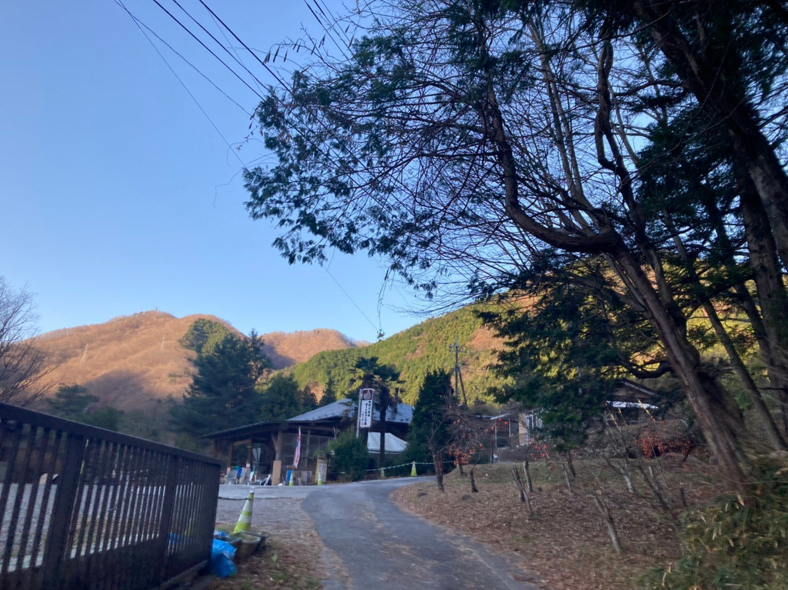
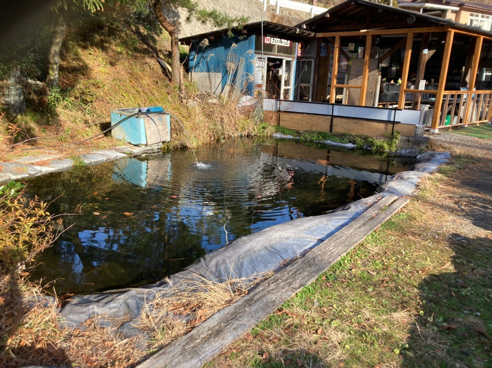
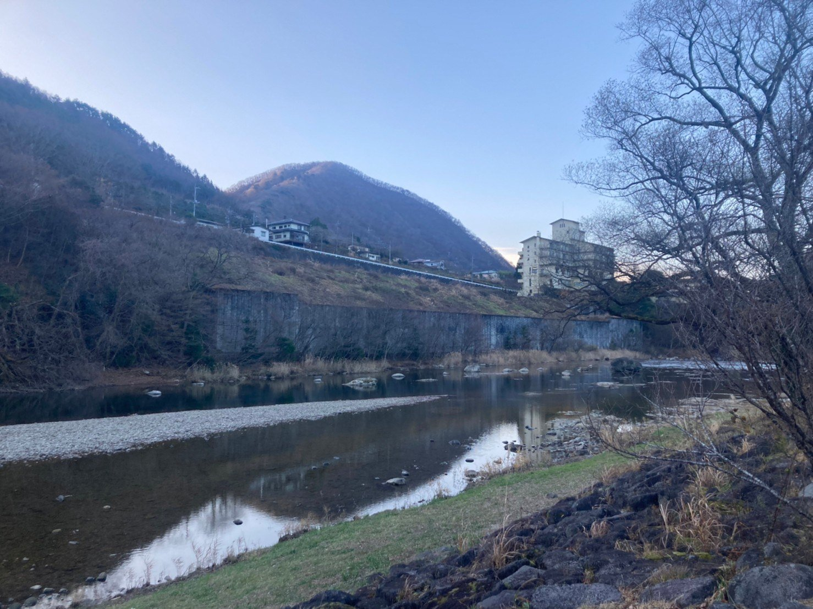
互いにペーパードライバーということもあり、キャンパーにしては珍しい電車やバスを駆使して現場に向かう僕たちにとって、アクセス良好のキャンプ場ほどありがたいことはない。
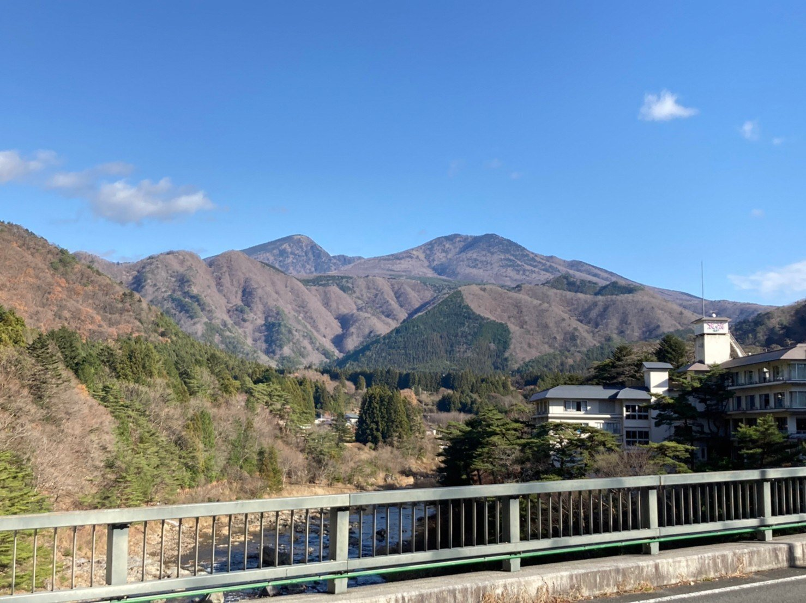
しかし、いくら歩いて15分程度といえど、普段持たないような重さの荷物を背負い、日頃の運動不足を呪いながら山道を歩くのは案外疲れるものだ。
そんな事情もあり、僕たちは到着し受付を済ませるなり、指定のキャンプサイトでアウトドアチェアを取り出し、しばし休息を取った。
陽が沈みかけた空を見上げ、息を整える。
気づけば、僕たちはどちらからともなく笑い合っていた。まだ何も達成していないというのに、心のうちには不思議な満足感すら漂っていた。
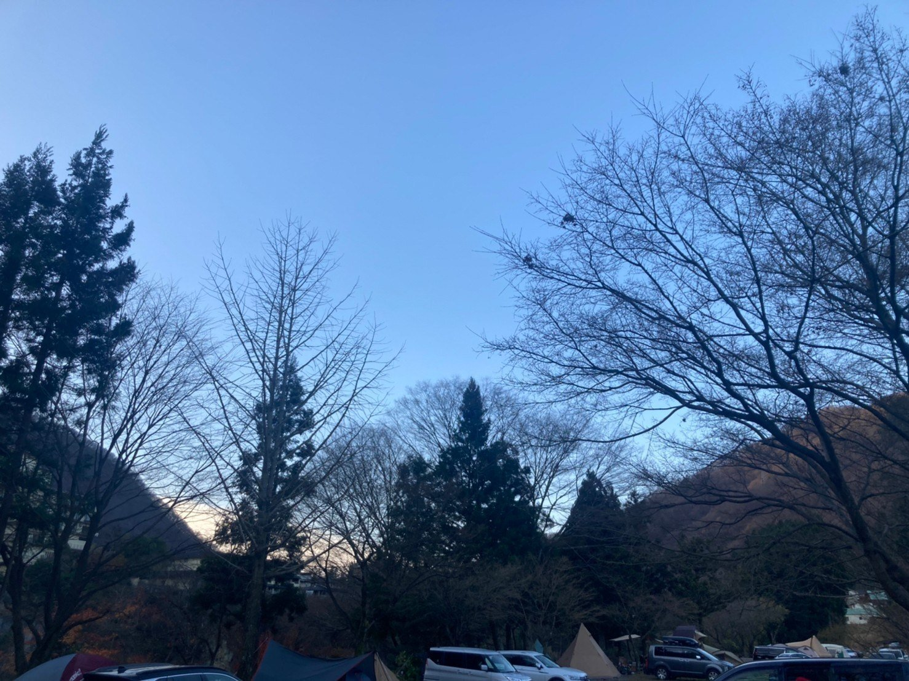
やがて相棒が持参した焚き火台に、受付で買っておいた薪を割っては積み上げ、火をつける。
しかし、ここで問題発生。薪に火がうつらないのだ！
今思えば、どちらかが着火剤を持っていけばよかったのだが、まだまだ素人な僕たちにはその考えすら持ち合わせていなかった。
そんな時、柴犬を連れた管理人さんが通りかかり、一瞬で状況を察した様子で、「炭、あげようか？」と救いの手を差し伸べてくれたのだ！(しかも、タダで！)
ほどなくして、僕たちは焚き火にありつくことができた。ありがとう、管理人さん！ この御恩は一生忘れないよ！
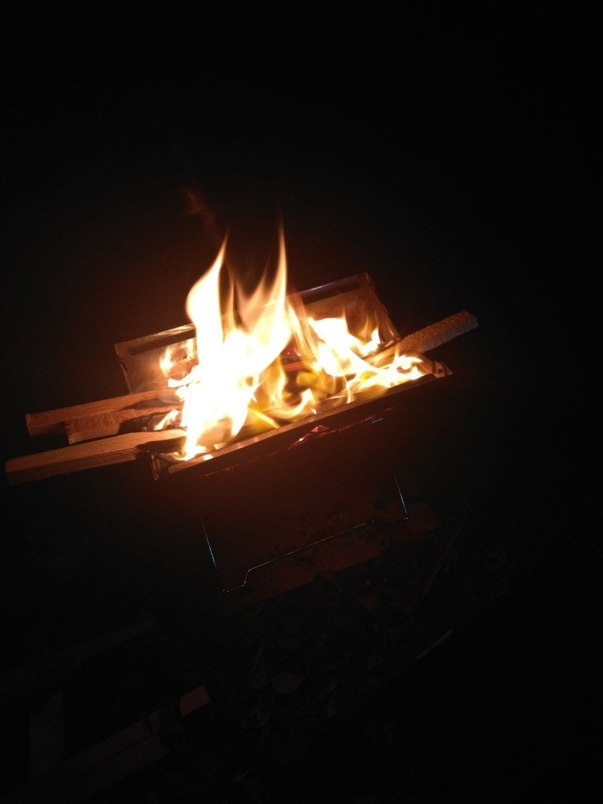
実は当時のキャンプについて、過去写真を上げていたことがあった。
しかし、このたび改めて記事にしたため新しくマガジン化しようと思ったのは、キャンプをした“記憶”をブログのように“記録”として残しておきたいと思ったから。
https://note.com/kaito0589/n/nde8f3ab05b48
そう思えたのは、ひとえにキャンプの楽しさを感じたからだ。
相棒が持ってきてくれた肉を、焚き火の火力を活かして焼く。僕たちの間には煙が立ち上り、肉が焼きあがるまでは他愛もない話をして盛り上がる。
なんだろう。それはまるで、気づかぬうちに失ってしまった時間が帰ってきたようだった。
家にいる時のテレビの音や、街中を行き交う足音もない世界。ただそこには懐かしい顔がいて、よく見ていたらお互い老けたなあ、なんて冗談を言い合う。
それぞれの近況を報告しているうちに肉は焼き上がり、駅前で買った缶ビールで乾杯。これが言い表せないほど美味しくてたまらない。
相棒とは、ほかの誰よりも旅をしてきた仲だ。
年を重ねるにつれて、腹を割って話せる存在ほどありがたいことはない。これまで過ごした長い時間が相棒との絆を育ててくれていたことに、僕はキャンプをしてようやく気がついた。
目の前の存在に感謝をしつつ、ありのままの心で談笑する。心の奥底で似通ったものを持ち合わせていなければ、こんなに洗いざらい気持ちを話すこともないだろう。
そして、今回の初キャンプ。
キャンプならではのテント設営やアウトドア料理など、共に空間を作り上げていく過程はこれまでにない体験だった。そして、僕にとってその時間は何にも代えがたい幸せだった。
昔、高校の帰りに近所の公園で暗くなるまでくだらないことばかり話していた日々を思い出す。
あの頃と比べて、周囲を取り巻く環境は大きく変わったけれど、今この瞬間だけはタイムスリップしたかのような気持ちで相棒と喋っていた。
こういうのでいい。いや、こういうのがいいんだ。
なにもわざわざ国内外の有名な観光地に行かなくても、すぐそこに幸せは転がっていて、なんなら自分たちで作り上げることだってできる。そんなことを実感した夜だった。
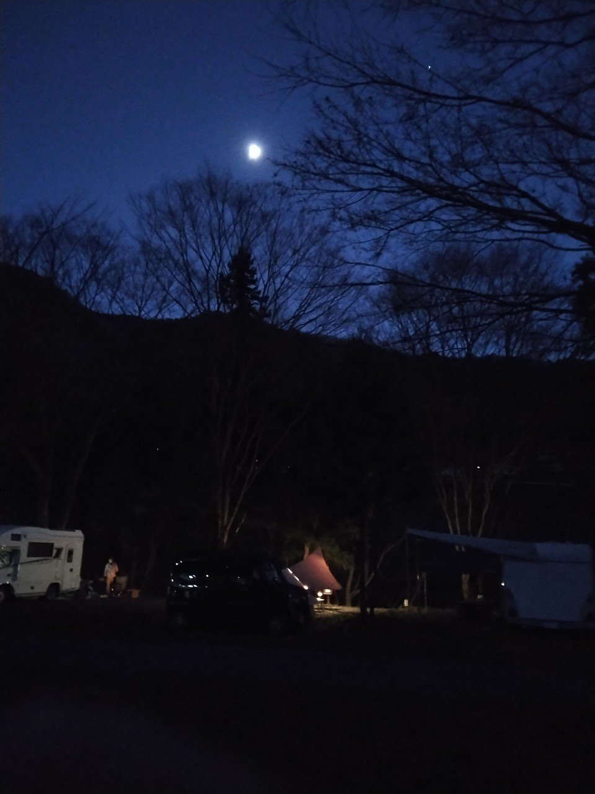
その夜、僕たちは初めてテントで寝泊まりし、お互い目を瞑りながら話していたら知らない間に眠っていた。気づかぬうちに、体には疲れがたまっていたのだろう。
翌朝は7時頃に起床。
再び焚き火を起こし、朝の空を見上げながらホットコーヒーを飲んだ。
冬の朝らしく、吐く息は白かったけど、胸のうちは熱かった。完全にキャンプの沼にハマる予感がした。
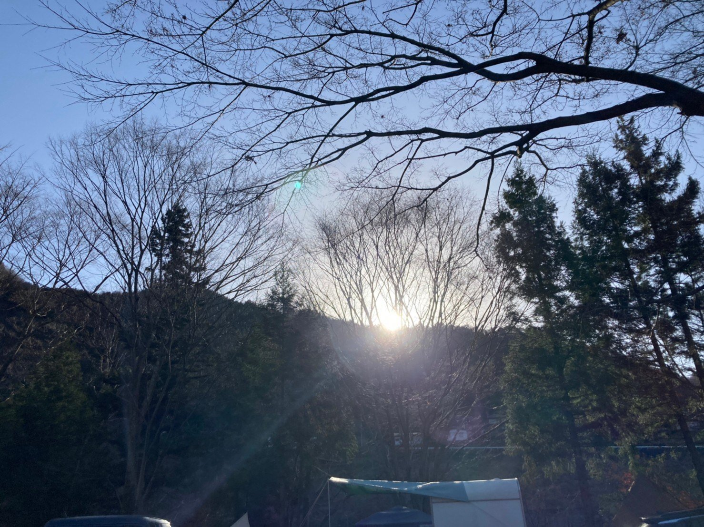
これが、僕たちが経験した初キャンプの(大体の)顛末だ。
普通のレポだと読むに堪えないものになりそうだから、ちょっと小説風にしてみました(それでも「読めたもんじゃない」と思ったかもしれませんが……)
まあこんな風にして、非常に個人的なキャンプブログを今後も書いていきたいと思うので、よろしくです。そして、いつか読み返して、相棒とあーだこーだ言いながら酒の肴にしたいのです。笑
……ということで、最後になりましたが改めて。いやーほんと初キャンプ、楽しかったなぁ(しみじみ)
【おまけ】
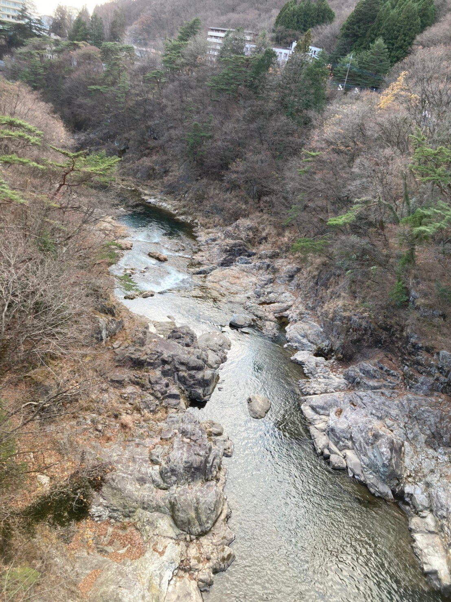
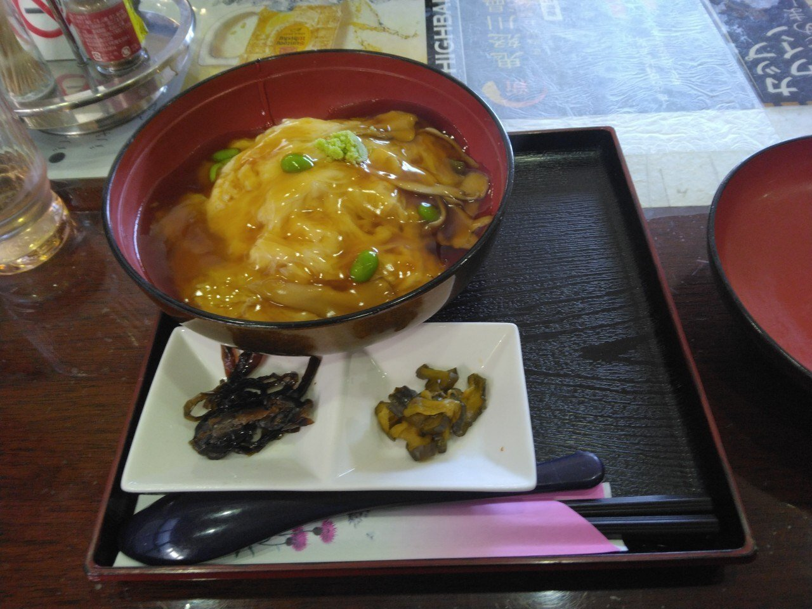
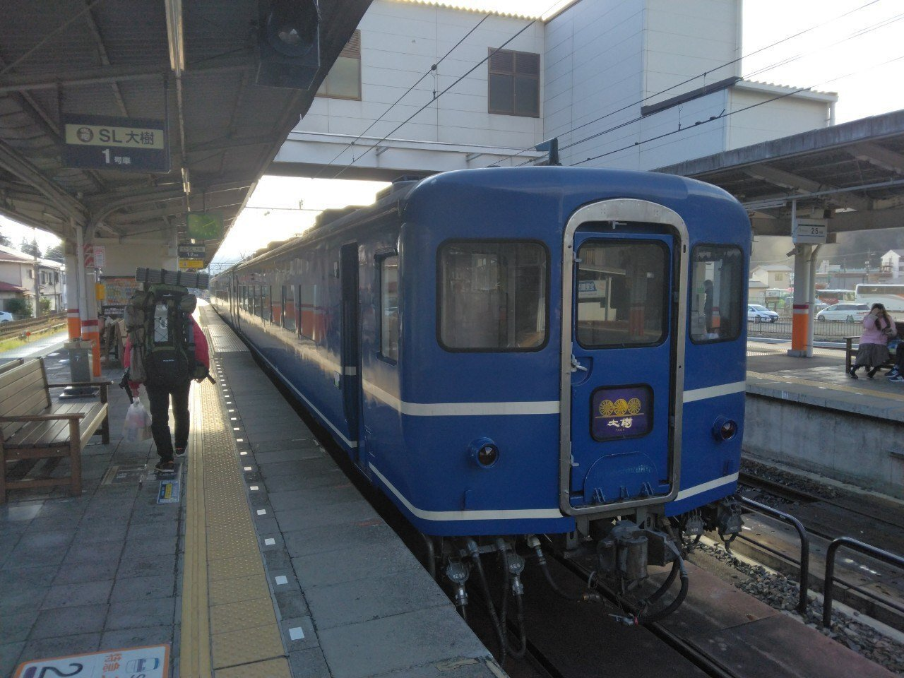
【今回訪れたキャンプ場】
鬼怒川温泉オートキャンプ場(栃木県日光市鬼怒川温泉滝1053)
https://www.kinugawa-camp.jp/index.html